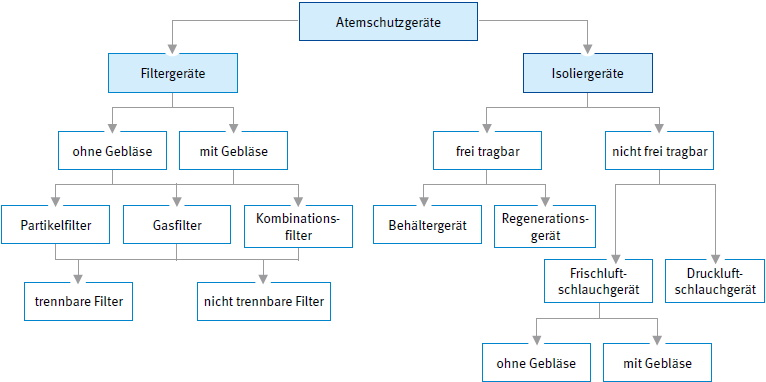
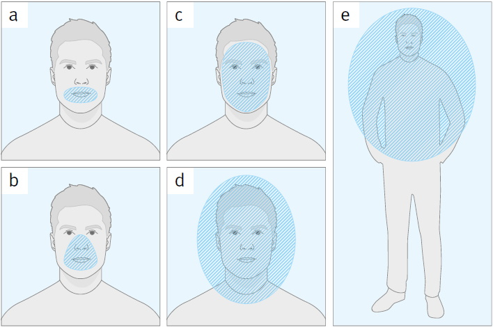

Atemschutzgeräte werden entsprechend ihrer Wirkungsweise in Filtergeräte (filtrierend, abhängig von der Umgebungsatmosphäre wirkend) und Isoliergeräte (atemgasliefernd, unabhängig von der Umgebungsatmosphäre wirkend) unterteilt sowie nach ihrer Bauform und Funktionsweise unterschieden.
Die verschiedenen Gerätetypen sind in entsprechenden deutschen oder europäischen Normen spezifiziert. Die Benennung von Einzelteilen von Atemschutzgeräten ist in DIN EN 134 festgelegt. Eine detaillierte Funktionsbeschreibung von Atemschutzgeräten ist in Kapitel 10 aufgeführt.

Abb. 1 Einteilung der Atemschutzgeräte
Der Atemanschluss ist der Teil des Atemschutzgerätes, der die Verbindung zur atemschutzgerättragenden Person herstellt. Es werden folgende Atemanschlüsse unterschieden:
Atemanschlüsse decken unterschiedliche Bereiche des Körpers ab:

Abb. 2 Abdeckungsbereiche der Atemanschlüsse
| Abdeckungsbereich | Atemanschlüsse | |
| a | nur der Mund | Mundstückgarnitur |
| b | Mund und Nase | Viertelmaske, Halbmaske |
| c | Gesicht | Vollmaske, Masken-Helm-Kombination |
| d | Kopf | Atemschutzhaube, Atemschutzhelm |
| e | Körper | Atemschutzanzug |
Atemschutzgeräten werden in Abhängigkeit von ihrer Funktionsweise, Klasse und Bauform unterschiedliche Schutzniveaus zugewiesen.
Bei der Festlegung des Schutzniveaus in der Tabelle 2 sind neben der in der jeweiligen Norm angegebenen höchstzulässigen Leckage bereits weitere Einflussgrößen berücksichtigt worden, wie z. B. der Atemwiderstand bei hohen Atemminutenvolumina oder der verbleibende Schutz bei Störung am Gerät.
Das Schutzniveau entspricht nicht dem oft verwendeten Begriff "Schutzfaktor", der den Kehrwert der höchstzulässigen Leckage darstellt.
Eine geringe Leckage bedeutet, dass nur eine geringe Menge an Schadstoffen in das Innere des Atemanschlusses gelangt.
Um ausreichenden Schutz zu gewährleisten, muss das Schutzniveau des Atemschutzgerätes mindestens so hoch sein, wie das z. B. durch Messung ermittelte Vielfache des Grenzwertes eines vorliegenden Schadstoffes. Damit wird sichergestellt, dass in der Einatemluft der Grenzwert des Schadstoffes sicher unterschritten bleibt.
Das in der Tabelle 2 angegebene Schutzniveau kann nur dann erreicht werden, wenn das Atemschutzgerät in einwandfreiem Zustand bestimmungsgemäß eingesetzt wird und der gewählte Atemanschluss passend für die atemschutzgerättragende Person ist.
Schutzniveaus sind nur für Atemschutzgeräte für Arbeit und Rettung festgelegt.
Für die Auswahl von Atemschutzgeräten für Fluchtzwecke gelten andere Kriterien. Nähere Informationen sind in Kapitel 4.5.2 angegeben.
Tabelle 2 Schutzniveau von Atemschutzgeräten
| Geräteart | Norm DIN EN | Schutzniveau | Bemerkungen, Einschränkungen |
| Filtergeräte (Erläuterungen siehe Kapitel 10.2) | |||
| Vollmaske oder Mundstückgarnitur mit Partikelfilter der Klasse P1 | 136 142 143 |
4 | Als Atemschutz nicht sinnvoll, da der hohe Filterdurchlass die geringe Maskenleckage aufhebt. Nicht gegen CMR-Stoffe und radioaktive Stoffe sowie luftgetragene biologische Arbeitsstoffe mit der Einstufung in Risikogruppe 2 und 3 und Enzyme. |
| Vollmaske oder Mundstückgarnitur mit Partikelfilter der Klasse P2 | 136 142 143 |
15 | Gegen CMR-Stoffe und radioaktive Stoffe sowie luftgetragene biologische Arbeitsstoffe mit der Einstufung in Risikogruppe 3 und Enzyme nur nach Gefährdungsbeurteilung. |
| Vollmaske oder Mundstückgarnitur mit Partikelfilter der Klasse P3 | 136 142 143 |
400 | |
| Halb-/Viertelmaske mit Partikelfilter der Klasse P1, partikelfiltrierende Halbmaske FFP1 | 140 143 149 1827 |
4 | Nicht gegen CMR-Stoffe und radioaktive Stoffe sowie luftgetragene biologische Arbeitsstoffe mit der Einstufung in Risikogruppe 2 und 3 und Enzyme. |
| Halb-/Viertelmaske mit Partikelfilter der Klasse P2, partikelfiltrierende Halbmaske FFP2 | 140 143 149 1827 |
10 | Gegen CMR-Stoffe, radioaktive Stoffe und luftgetragene biologische Arbeitsstoffe mit der Einstufung in Risikogruppe 3 und Enzyme nur nach Gefährdungsbeurteilung. |
| Halb-/Viertelmaske mit Partikelfilter der Klasse P3, partikelfiltrierende Halbmaske FFP3 | 140 143 149 1827 |
30 | |
| Vollmaske oder Mundstückgarnitur mit Gasfilter1) | 136 14387 142 |
400 | |
| Halb-/Viertelmaske mit Gasfilter1) | 140 14387 |
30 | |
| Gasfiltrierende Halbmaske1) | 405 bzw. 1827 | 30 | |
| Gerät mit Kombinationsfilter | Gas- und Partikelfilterteil sind getrennt zu betrachten. Es gelten die jeweiligen Schutzniveaus des Gas- und Partikelfilterteils. |
||
| Filtergeräte mit Gebläse (Erläuterungen siehe Kapitel 10.2) | |||
Vollmaske, Halbmaske oder Viertelmaske mit Gebläse und
TM2 TM3 |
12942 | 10 100 500 |
Geräte der Klasse TM1 dürfen nicht gegen CMR-Stoffe, radioaktive Stoffe sowie luftgetragene biologische Arbeitsstoffe mit der Einstufung in Risikogruppe 2 und 3 und Enzyme eingesetzt werden. |
Helm/Haube mit Gebläse und
TH2 TH3 |
12941 | 5 20 100 |
Atemschutzhelme oder -hauben bieten bei Ausfall oder Leistungsabfall des Gebläses keinen ausreichenden Schutz. Geräte ohne entsprechende Warneinrichtung und Geräte der Klasse TH1 dürfen nicht gegen CMR-Stoffe, akut toxische Stoffe der Kategorie 1 und 2, radioaktive Stoffe sowie luftgetragene biologische Arbeitsstoffe mit der Einstufung in Risikogruppe 2 und 3 und Enzyme eingesetzt werden. |
| Atemschutzanzug mit Gebläse und Filter TH1 TH2 TH3 |
12941 | 10 50 500 |
Schutz der Atemwege und des gesamten Körpers gegen feste und flüssige Aerosole und Gase. |
| Isoliergeräte (Erläuterungen siehe Kapitel 10.3) | |||
| Druckluft-Schlauchgeräte mit kontinuierlicher Luftzuführung und evtl. Regelventil Klasse A | Klasse A: geringe Anforderungen an Festigkeit und Beständigkeit gegen Beflammung, Haube/Helm max. 1,5 kg max. Länge des Druckluftschlauchs = 10 m |
||
| Druckluft-Schlauchgerät mit Haube oder Helm Klasse 1A Klasse 2A Klasse 3A Klasse 4A |
14594 | 5 20 100 500 |
Geräte ohne entsprechende Warneinrichtung und Geräte der Klasse 1 dürfen nicht gegen CMR-Stoffe, akut toxische Stoffe der Kategorie 1 und 2, radioaktive Stoffe sowie luftgetragene biologische Arbeitsstoffe der Risikogruppen 2 und 3 und Enzyme eingesetzt werden. |
| Druckluft-Schlauchgerät mit Atemschutzanzug Klasse 1A Klasse 2A Klasse 3A Klasse 4A mit nicht dicht gegen die Umgebungsatmosphäre abschließendem Atemschutzanzug Klasse 4A mit partikeldicht gegen die Umgebungsatmosphäre abschließendem Atemschutzanzug Klasse 4A mit gasdicht gegen die Umgebungsatmosphäre abschließendem Atemschutzanzug |
14594 | 5 20 100 500 1000 > 10003) |
Geräte ohne entsprechende Warneinrichtung und Geräte der Klasse 1 dürfen nicht gegen CMR-Stoffe, akut toxische Stoffe der Kategorie 1 und 2, radioaktive Stoffe sowie luftgetragene biologische Arbeitsstoffe der Risikogruppen 2 und 3 und Enzyme eingesetzt werden. |
| Druckluft-Schlauchgerät mit Halbmaske (DIN EN 140) Klasse 1A Klasse 2A Klasse 3A |
14594 | 5 20 100 |
|
| Druckluft-Schlauchgerät mit Vollmaske (DIN EN 136, Klasse 1, 2, 3) Klasse 4A |
14594 | 1000 | |
| Druckluft-Schlauchgeräte mit kontinuierlicher Luftzuführung und evtl. Regelventil Klasse B | Klasse B: höhere Anforderungen an Festigkeit und Beständigkeit gegen Beflammung |
||
| Druckluft-Schlauchgerät mit Haube, Helm oder Anzug Klasse 1B Klasse 2B Klasse 3B |
14594 | 5 20 100 |
Geräte ohne entsprechende Warneinrichtung und Geräte der Klasse 1 dürfen nicht gegen CMR-Stoffe, akut toxische Stoffe der Kategorie 1 und 2, radioaktive Stoffe sowie luftgetragene biologische Arbeitsstoffe der Risikogruppen 2 und 3 und Enzyme eingesetzt werden. |
| Druckluft-Schlauchgerät mit Strahlerschutzhelm oder -haube Klasse 4B |
14594 | 500 | Speziell für Strahlarbeiten. |
| Druckluft-Schlauchgerät mit Viertel- oder Halbmaske (DIN EN 140) Klasse 1B Klasse 2B Klasse 3B Druckluft-Schlauchgerät mit Vollmaske (DIN EN 136, der Klasse 2 oder 3) Klasse 4B |
14594 | 5 20 100 1000 |
|
| Druckluft-Schlauchgerät mit Lungenautomat und Vollmaske (DIN EN 136, der Klasse 2 oder 3) in Normaldruckausführung in Überdruckausführung |
14593-1 | 1000 > 10003) |
|
| Druckluft-Schlauchgerät mit Atemschutzanzug Klasse 1, 2, 3, 4, 5 |
1073-1 | 1000 | Schutz der Atemwege und des gesamten Körpers gegen radioaktive Kontamination durch feste Partikel. |
| Druckluft-Schlauchgerät mit Atemschutzanzug (DIN EN 943-1, Chemikalienschutzanzug Typ 1c) | 14594 | > 10003) | |
| Frischluft-Schlauchgeräte | |||
| Frischluft-Saugschlauchgerät mit Vollmaske oder Mundstückgarnitur der Klasse 2 | 138 | 1000 | |
| Frischluft-Druckschlauchgerät der Klasse 1 oder 2 mit Halbmaske mit Vollmaske oder Mundstückgarnitur mit Haube oder Helm |
138 269 |
100 1000 50 |
Als Frischluft-Druckschlauch-Gerät mit manueller oder motorbetriebener Unterstützung. Klasse 1: leichte Bauart Klasse 2: schwere Bauart |
| Behältergeräte | |||
| Pressluftatmer mit Vollmaske und Lungenautomat in Normaldruckausführung in Überdruckausführung |
137 | 1000 > 10003) |
|
| Pressluftatmer mit Halbmaske und Lungenautomat in Überdruckausführung | 14435 | 100 | |
| Regenerationsgeräte | |||
| Regenerationsgerät mit Vollmaske oder mit Mundstückgarnitur in Normaldruckausführung in Überdruckausführung |
145 DIN 58652-2 |
1000 > 10003) |
|
1) Sofern damit nicht bereits die auf das Gasaufnahmevermögen bezogenen höchstzulässigen Einsatzkonzentrationen von
- 0,1 Vol.-% in Gasfilterklasse 1
- 0,5 Vol.-% in Gasfilterklasse 2
- 1 Vol.-% in Gasfilterklasse 3 überschritten werden.
Die Gasfilterklasse hat keinen Einfluss auf das Schutzniveau. Bei AX- und SX-Filtern gibt es nur eine Gasfilterklasse.
2) Sofern damit nicht bereits die auf das Gasaufnahmevermögen bezogenen höchstzulässigen Einsatzkonzentrationen für Gasfilter in Filtergeräten mit Gebläse von
- 0,05 Vol.-% in Gasfilterklasse 1
- 0,1 Vol.-% in Gasfilterklasse 2
- 0,5 Vol.-% in Gasfilterklasse 3 überschritten werden.
Die Gasfilterklasse hat keinen Einfluss auf das Schutzniveau. Bei AX- und SX-Filtern gibt es nur eine Gasfilterklasse.
3) Eine Begrenzung des Einsatzbereiches aufgrund hoher Konzentrationen von Schadstoffen lässt sich aus dem bisher bekannten Einsatz dieser Gerätetypen nicht ableiten.
Atemschutzgeräte gelten als persönliche Schutzausrüstungen, die gegen Risiken schützen, die zu schwerwiegenden Folgen wie Tod oder irreversiblen Gesundheitsschäden führen können und werden deshalb in die Kategorie III der PSA-Verordnung eingestuft. Vor dem Inverkehrbringen muss die Herstellerfirma eine Baumusterprüfung ausführen lassen, um eine EU-Baumusterprüfbescheinigung einer notifizierten Stelle zu erlangen. Für persönliche Schutzausrüstung der Kategorie III ist ferner eine regelmäßige Kontrollmaßnahme durch eine notifizierte Stelle erforderlich (mindestens jährlich). Die vierstellige Nummer dieser überwachenden Stelle ist neben dem CE-Zeichen anzugeben. Diese Maßnahmen sind Voraussetzung für die Ausstellung der EU-Konformitätserklärung und der CE-Kennzeichnung durch die Herstellerfirma.
Atemschutzgeräte dürfen nur benutzt werden, wenn eine EU-Konformitätserklärung vorliegt und das Atemschutzgerät mit dem CE-Zeichen und der vierstelligen Nummer der überwachenden notifizierten Stelle versehen ist.
Abb. 3 CE-Kennzeichnung
Zu den weiteren Kennzeichnungen gehören z. B.: